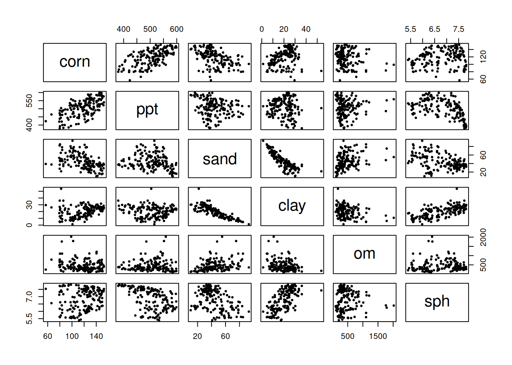
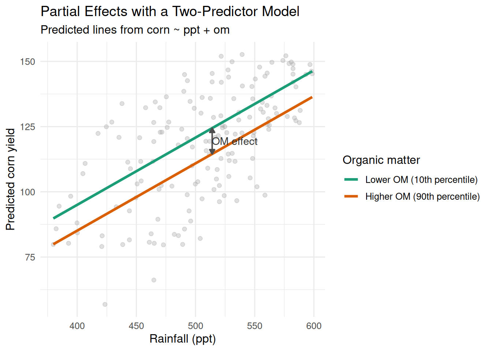
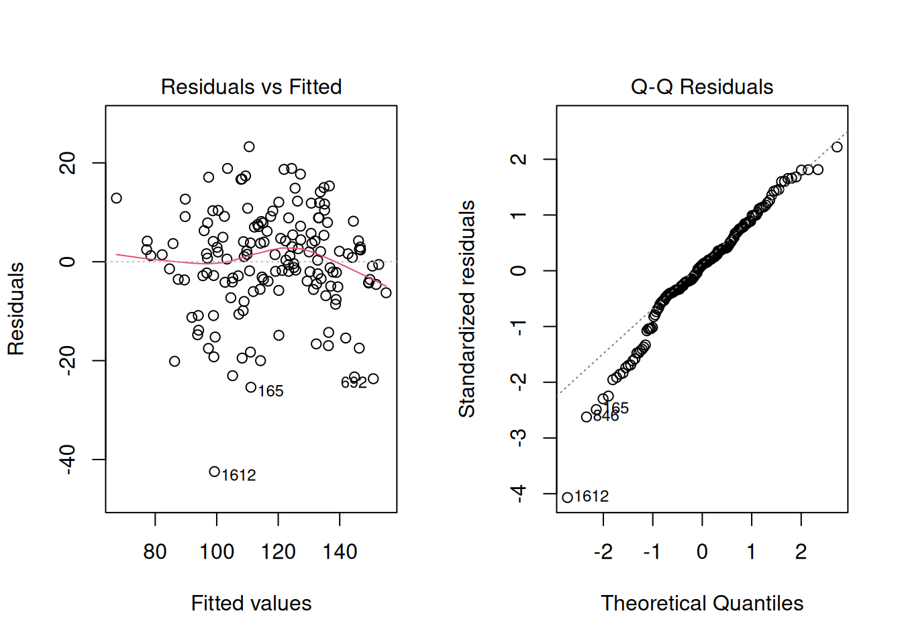
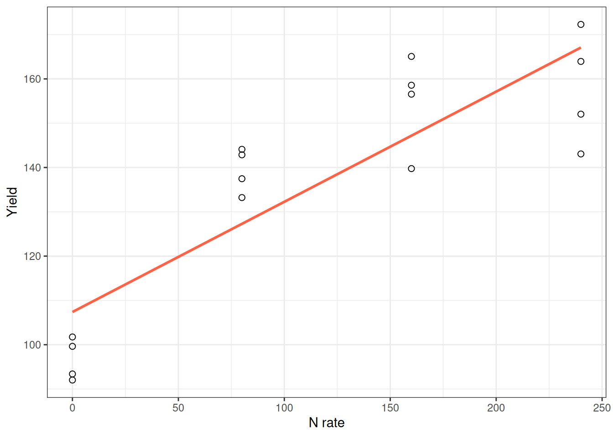
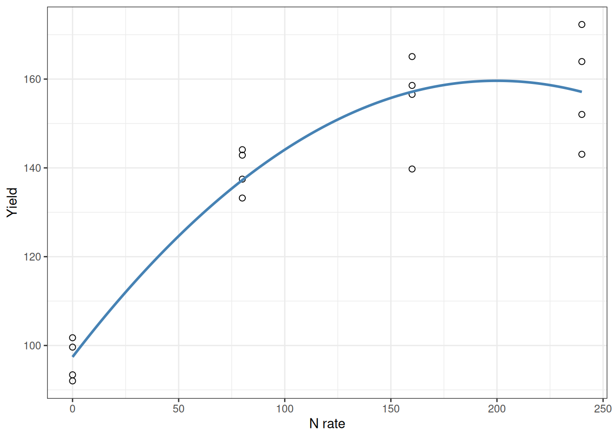
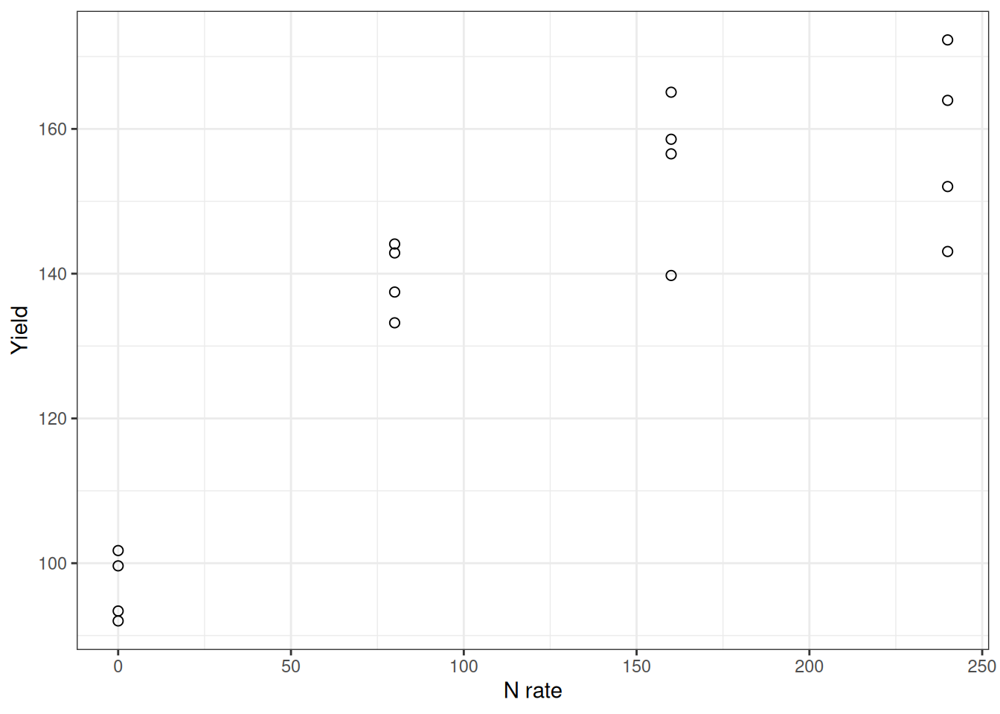
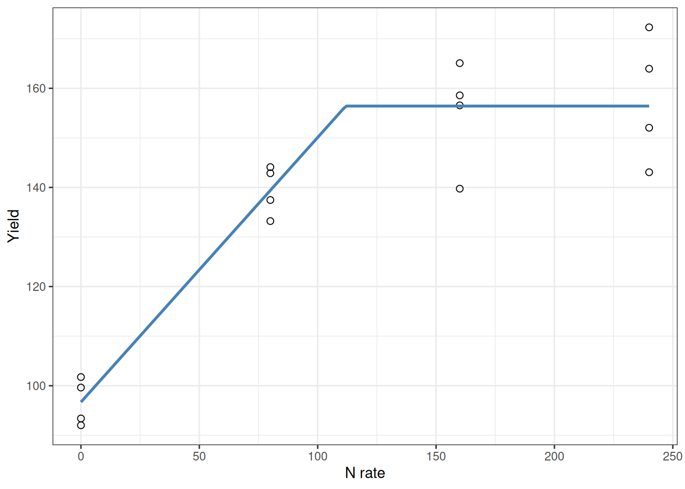
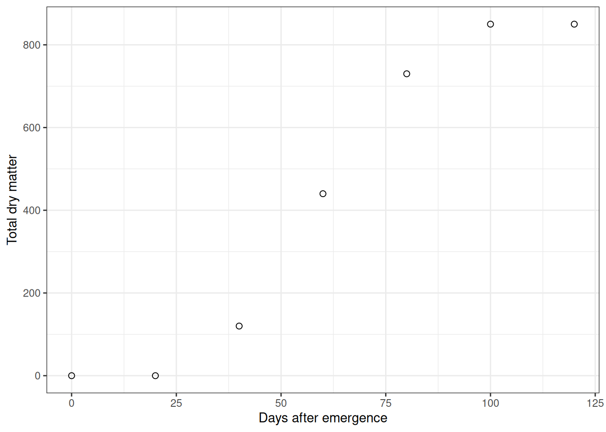
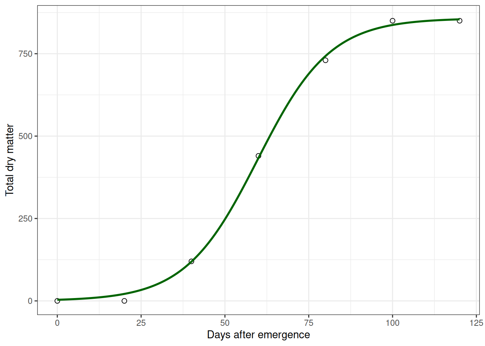

county state stco ppt whc sand silt clay om
1 Abbeville SC 45001 562.2991 22.94693 39.26054 21.38839 39.351063 36.92471
2 Acadia LA 22001 751.1478 37.83115 12.82896 54.19231 32.978734 105.79133
3 Accomack VA 51001 584.6807 18.56290 74.82042 16.82072 8.358863 103.11425
4 Ada ID 16001 124.9502 15.54825 44.49350 40.48000 15.026510 77.61499
5 Adair IA 19001 598.4478 28.91851 17.82011 48.44056 33.739326 259.53255
6 Adair KY 21001 698.6234 20.87349 15.66781 48.16733 36.164866 73.05356
kwfactor kffactor sph slope tfactor corn soybean cotton
1 0.2045719 0.2044325 5.413008 42.59177 4.666834 57.75000 16.75385 525.500
2 0.4432803 0.4431914 6.370533 34.92266 4.855202 92.42500 28.72857 NA
3 0.2044544 0.2044544 5.166446 NA 4.011007 116.99714 30.44857 575.125
4 0.4106704 0.4198545 7.648190 NA 2.853957 145.74138 NA NA
5 0.3541369 0.3541369 6.215139 55.24201 4.691089 133.02571 41.70857 NA
6 0.3166089 0.3725781 5.351832 37.65075 4.119289 95.76765 37.50000 NA
wheat
1 30.17500
2 38.11000
3 56.07407
4 97.26296
5 34.04000
6 37.42105Introduction
In Module 10, we kept things simple by design: one predictor, one response, and a straight line. That simplicity was intentional. It let us focus on the core habits that actually matter: starting with a biological question, checking whether the model shape makes sense, and separating statistical significance from practical reality.
But real agronomy is seldom that simple.
Think about corn yield for a moment. How much does it depend on rainfall alone? Maybe some. But yield also responds to many factors, like soil texture, organic matter, pH, temperature, and management choices. All of these act together.
And here’s the thing: many of those relationships are not straight lines. They curve. They plateau. They follow S-shaped patterns.
So Module 11 takes the habits from Module 10 and extends them to handle two real-world challenges:
- Multiple regression: When you have several predictors, not just one
- Nonlinear modeling: When the relationship is curved, not straight
The core question doesn’t change:
What model structure gives interpretable, biologically reasonable, and practically useful predictions?
We’re just using better tools to answer it.
Part 1: Multiple Linear Regression
The Model: From One Predictor to Many
Here’s the key idea: We’re going to keep the same basic model structure, but expand it from one predictor to many.
In Module 10, we looked at this simple model:
\[Y = \beta_0 + \beta_1 X + \varepsilon\]
Now we add more predictors:
\[ Y = \beta_0 + \beta_1 X_1 + \beta_2 X_2 + \cdots + \beta_p X_p + \varepsilon \]
The algebra looks the same. But here’s where things get interesting: the interpretation changes fundamentally.
In simple regression, \(\beta_1\) is straightforward:
“For every one-unit increase in \(X\), \(Y\) changes by \(\beta_1\) units”
In multiple regression, each coefficient tells a different story:
“For every one-unit increase in \(X_j\), \(Y\) changes by \(\beta_j\) units after accounting for all the other predictors.”
Let me say that again because it’s crucial: after accounting for all the other predictors. This is what makes multiple regression powerful and also what makes it tricky to interpret.
When you have multiple predictors, each coefficient is what we call a partial effect. It’s the association between one predictor and the response after adjusting for the other predictors in the model.
This is a conditional association, not automatically a causal effect.
Here is a concrete illustration to make this real:
Suppose two counties in Minnesota receive exactly the same amount of rainfall. But one has higher organic matter in its soil than the other. If the model gives \(\beta_{om} = 0.8\), here’s what that means:
Holding rainfall (and all other variables) constant, yield increases by 0.8 units for each one-unit increase in OM
Notice what we’re doing here: we’re comparing two counties that are similar in everything except organic matter.
We’re not comparing “all high-OM counties” vs “all low-OM counties” (because those would differ in rainfall too, and a thousand other things).
That’s the whole point. This is what makes it a partial effect.
This does NOT mean: We have created a controlled experiment. We didn’t go out and manipulate organic matter while holding rainfall steady. We’re just using the model to statistically adjust for the differences.
This adjusted interpretation is why multiple regression matters. Without it, the key question can’t be answered: “Is this factor actually important, or is it just correlated with something else that matters?”
Case Study: Which Soil and Climate Factors Actually Drive Corn Yield?
Here’s a concrete scenario that makes this necessary. Imagine you’re a soil scientist working with a cooperative extension office. A farmer walks in and asks:
“I know rainfall matters for yield, but in this region, which soil properties matter most? Is it organic matter? Texture? pH?”
That’s a great question. But here’s why you can’t just run three separate regressions:
Across counties, rainfall, organic matter, and soil texture are all correlated. Areas with high organic matter typically also have better rainfall. If you regressed yield on OM alone, you’d see a big positive effect. But is that really because of OM, or is it just because those counties happen to have better rainfall too?
This is where multiple regression helps. Instead of asking “Does OM matter?” ask the real question: “After accounting for rainfall, does OM still explain variation in yield?”
Let’s work through it with county-level data from Minnesota and Wisconsin.
For this example, the analysis focuses on Minnesota and Wisconsin.
[1] 156 6 corn ppt sand clay
Min. : 56.83 Min. :379.8 Min. :10.16 Min. : 1.241
1st Qu.:102.43 1st Qu.:469.7 1st Qu.:33.42 1st Qu.:13.164
Median :122.47 Median :514.1 Median :40.46 Median :21.139
Mean :118.29 Mean :506.9 Mean :44.43 Mean :20.045
3rd Qu.:134.35 3rd Qu.:548.5 3rd Qu.:54.77 3rd Qu.:26.117
Max. :152.65 Max. :598.6 Max. :93.37 Max. :53.693
om sph
Min. : 101.4 Min. :5.394
1st Qu.: 269.3 1st Qu.:6.184
Median : 359.8 Median :6.953
Mean : 455.2 Mean :6.803
3rd Qu.: 560.6 3rd Qu.:7.428
Max. :2021.0 Max. :7.815 Plot the Data First
Before fitting anything, inspect the data. No exceptions.

A scatterplot matrix isn’t pretty, but it’s honest. You’ll see which variables move together, which relationships look straight or curved, and how much your predictors are correlating with each other. Your eyes will catch patterns that a test will miss.
Start with a Simple Model (Two Predictors)
Let’s start with a simple model using only rainfall and organic matter to predict corn yield. This might feel like a stripped-down model, but that’s exactly the point. Simplicity helps us see the core logic before we add complexity.
model_simple <- lm(corn ~ ppt + om, data = model_data)
summary(model_simple)
Call:
lm(formula = corn ~ ppt + om, data = model_data)
Residuals:
Min 1Q Median 3Q Max
-43.252 -11.079 -0.541 12.149 30.401
Coefficients:
Estimate Std. Error t value Pr(>|t|)
(Intercept) -5.284728 12.638306 -0.418 0.676423
ppt 0.257903 0.024659 10.459 < 2e-16 ***
om -0.015734 0.004223 -3.726 0.000273 ***
---
Signif. codes: 0 '***' 0.001 '**' 0.01 '*' 0.05 '.' 0.1 ' ' 1
Residual standard error: 16.22 on 153 degrees of freedom
Multiple R-squared: 0.4403, Adjusted R-squared: 0.433
F-statistic: 60.19 on 2 and 153 DF, p-value: < 2.2e-16So you’ve got the output. Now what? Here’s what NOT to do: don’t just scan for low p-values and move on.
Instead, scrutinize each coefficient carefully. First, the sign: does it match biology? Does more rainfall increase yield? That makes sense. If rainfall decreases yield, that’s a red flag unless we’re talking about poorly drained soils.
Then check uncertainty. Is the p-value small, and do the confidence intervals exclude zero? Wide confidence intervals mean the model doesn’t really know where the effect lives. Finally, plausibility: Given your data and model assumptions, does this make biological sense? Sometimes you get a technically valid result that’s biologically nonsensical.
Visualizing Partial Effects
If graphs help you, here’s a direct way to see partial effects.
Let’s use a stripped-down teaching model with just two predictors: rainfall and organic matter.
\[ \text{corn} = \beta_0 + \beta_{ppt}\,\text{ppt} + \beta_{om}\,\text{om} + \varepsilon \]
This makes the partial-effect idea easier to see without extra moving parts. In this setup, \(\beta_{om}\) is the change in predicted yield for a one-unit increase in OM after accounting for rainfall.

How to read it quickly:
- At any fixed rainfall, the vertical gap between the two lines is the OM partial effect.
- The lines are parallel because there is no interaction term (
ppt:om). That means the OM effect is constant across rainfall values in this model.
Pause and reflect: If two counties have the same rainfall but different OM, the model-predicted yield gap between those counties is the partial OM effect.
Expand to the Full Model
Once that logic is clear, we can expand to the full model with additional predictors:
model_full <- lm(corn ~ ppt + sand + clay + om + sph, data = model_data)
summary(model_full)
Call:
lm(formula = corn ~ ppt + sand + clay + om + sph, data = model_data)
Residuals:
Min 1Q Median 3Q Max
-42.432 -4.342 1.108 7.035 23.278
Coefficients:
Estimate Std. Error t value Pr(>|t|)
(Intercept) -189.02125 22.76727 -8.302 5.52e-14 ***
ppt 0.37140 0.02165 17.159 < 2e-16 ***
sand -0.33075 0.10746 -3.078 0.00248 **
clay -1.16506 0.24579 -4.740 4.92e-06 ***
om -0.01679 0.00307 -5.469 1.85e-07 ***
sph 24.21303 2.02991 11.928 < 2e-16 ***
---
Signif. codes: 0 '***' 0.001 '**' 0.01 '*' 0.05 '.' 0.1 ' ' 1
Residual standard error: 10.61 on 150 degrees of freedom
Multiple R-squared: 0.7651, Adjusted R-squared: 0.7573
F-statistic: 97.71 on 5 and 150 DF, p-value: < 2.2e-16This is the same idea as before, just with more variables being adjusted for at the same time. You’re not changing the logic, only increasing realism.
Check Assumptions
Just like in Module 10, we need to look at the diagnostics. Here’s what these four plots are actually telling you:
par(mfrow = c(1, 2))
plot(model_full, which = 1:2)
par(mfrow = c(1, 1))Residuals vs Fitted: You want to see a random cloud centered around zero. No patterns. If it fans out (wider at high values than low), that’s heteroscedasticity—your model loses confidence at some predictions. If you see a U-shape or wave, the model is systematically biased.
Normal Q-Q: Points should track the diagonal line. Small wiggles at the tails are usually fine in large samples, but a systematic S-shape means residuals aren’t normally distributed. That’s worth noting. In larger samples, this is usually more about inference precision (p-values and intervals) than mean-prediction quality.
Quick check: If at least one diagnostic shows a clear pattern, pause before interpreting coefficients as if everything is fine.
What’s Going On When Coefficients Change?
Suppose you fit a model with both sand and clay. You get a negative coefficient on sand. Then you remove clay from the model and refit. Now sand has a positive coefficient. Something flipped.
Your first thought might be: “That’s weird. Did I make a mistake?”
Not necessarily. This is actually a prediction.
Here’s what’s happening:
Sand and clay are correlated in most cases (areas with more sand have less clay). When clay is in the model, the model is extracting the partial effect of sand after already accounting for clay. When you remove clay, sand’s job changes. Now sand has to explain more variation because clay isn’t there to help. So the sign can flip.
What’s the lesson here? This is a consequence of multicollinearity—when predictors are correlated, they can share or reallocate explained variation among themselves. It’s one reason why you have to be careful when interpreting individual coefficients.
Diagnose Multicollinearity
Here’s the problem: If two predictors are highly correlated, their partial effects become unstable. A small change in the data can flip the sign or magnitude of one of the coefficients. This is bad because you can’t trust what the coefficient is telling you.
The correlation matrix is a good first check:
predictor_cor <- cor(model_data[, c("ppt", "sand", "clay", "om", "sph")])
round(predictor_cor, 2) ppt sand clay om sph
ppt 1.00 -0.19 -0.09 0.04 -0.46
sand -0.19 1.00 -0.84 0.34 -0.43
clay -0.09 -0.84 1.00 -0.28 0.67
om 0.04 0.34 -0.28 1.00 -0.04
sph -0.46 -0.43 0.67 -0.04 1.00Look for pairs of predictors with correlations near 0.7 or higher (in absolute value). This is not an absolute cutoff but it’s a good indication that standard errors could increase, which typically leads to larger p-values and wider confidence intervals. That makes real effects harder to detect as predictors compete for the same variation.
Pause and reflect: if your goal is prediction, correlated predictors can still help. If your goal is interpretation, correlation becomes a much bigger problem.
Does that automatically mean you need to remove a predictor? Not necessarily. But it absolutely means you need to interpret carefully. Not all multicollinearity is fatal, but you have to know when you’re dealing with it.
Worked Example: Variance Inflation Factor (VIF)
The correlation matrix is useful, but here’s an even more direct measure: the Variance Inflation Factor. It tells you how much the uncertainty of a coefficient is inflated due to correlations with other predictors.
Here’s the idea: Imagine you regressed one predictor (say, sand) on all the other predictors. If you can predict sand really well from the other variables, that means sand is redundant. This is because it’s explaining variation that’s already covered. In that case, sand’s coefficient will be uncertain, and its standard error will increase, which usually pushes p-values upward.
The math is:
\[ VIF_j = \frac{1}{1 - R_j^2} \]
where \(R_j^2\) comes from regressing \(X_j\) on the other predictors.
Here’s how to interpret VIF: values around 1 mean minimal collinearity—the predictor is doing its own thing. Values above about 5 suggest meaningful collinearity and loss of precision. Values above about 10 are often considered problematic. These are heuristics, not hard rules, so context still matters.
Watch out for compositional variables. Soil texture is the classic trap: sand, silt, and clay must sum to 100% by definition. That’s not collinearity—that’s perfect linear dependence. Your VIF will be infinite. This is a special case that requires special handling.
Here’s how it plays out with a worked example:
Let’s run VIF on two scenarios:
Let’s include all three soil texture classes as predictors in a model along with organic matter, and let’s take a look at the summary of this model.
model_inflated <- lm(corn ~ sand + silt + clay + om, data = counties_mn_wi)
summary(model_inflated)
Call:
lm(formula = corn ~ sand + silt + clay + om, data = counties_mn_wi)
Residuals:
Min 1Q Median 3Q Max
-57.877 -11.757 1.916 11.088 32.694
Coefficients:
Estimate Std. Error t value Pr(>|t|)
(Intercept) -5.072e+07 3.825e+07 -1.326 0.187
sand 5.072e+05 3.825e+05 1.326 0.187
silt 5.072e+05 3.825e+05 1.326 0.187
clay 5.072e+05 3.825e+05 1.326 0.187
om -1.669e-03 5.111e-03 -0.327 0.744
Residual standard error: 18.38 on 151 degrees of freedom
(3 observations deleted due to missingness)
Multiple R-squared: 0.2907, Adjusted R-squared: 0.272
F-statistic: 15.47 on 4 and 151 DF, p-value: 1.249e-10Estimates and standard errors for all three predictors seem to be inflated, right? Let’s take a look at the VIF for these predictors. We will use the vif() function in the library called car, which stands for Companion to Applied Regression.
library(car)
vif(model_inflated) sand silt clay om
1.983537e+13 8.446109e+12 4.548837e+12 1.143113e+00 We were talking about rules of thumb and saying that values above 10 were problematic… Those values are pretty extreme.
Let’s get rid of one of the soil texture classes, look at the summary and compute the VIF again.
model_adjusted <- lm(corn ~ sand + clay + om, data = counties_mn_wi)
summary(model_adjusted)
Call:
lm(formula = corn ~ sand + clay + om, data = counties_mn_wi)
Residuals:
Min 1Q Median 3Q Max
-57.741 -11.886 1.901 11.373 32.935
Coefficients:
Estimate Std. Error t value Pr(>|t|)
(Intercept) 184.200776 13.190346 13.965 < 2e-16 ***
sand -1.003902 0.162054 -6.195 5.21e-09 ***
clay -1.013062 0.330605 -3.064 0.00258 **
om -0.002201 0.005108 -0.431 0.66709
---
Signif. codes: 0 '***' 0.001 '**' 0.01 '*' 0.05 '.' 0.1 ' ' 1
Residual standard error: 18.42 on 152 degrees of freedom
(3 observations deleted due to missingness)
Multiple R-squared: 0.2825, Adjusted R-squared: 0.2683
F-statistic: 19.95 on 3 and 152 DF, p-value: 5.898e-11The estimates for the effects of sand and clay seem a little more plausible, also, the standard error of the effect of these two predictors seems way less inflated. Let’s compute the VIF to check.
vif(model_adjusted) sand clay om
3.533378 3.371310 1.135529 The VIF looks more under control now, indicating that keeping sand and clay as predictors could work.
What’s happening here?
In the first case, we included all three texture fractions—sand, silt, and clay. The VIF values are huge for the texture variables. Why? Because they’re compositional: they sum to 100% by definition. This means if you know sand and clay, you automatically know silt (it’s 100% minus the others). So the model can’t distinguish between their effects. This is perfect linear dependence.
In the second case, we dropped one texture variable (silt). Now the VIF values are finite and interpretable: sand ≈ 3.5, clay ≈ 3.3, OM ≈ 1.1.
With compositional data, you have to drop one category to avoid perfect collinearity. Once you do that, you can estimate the partial effects properly.
Keep It as Simple as Possible (But Not Simpler)
Here’s a temptation: the more predictors you add to a model, the higher \(R^2\) gets. It always does. So why not just throw everything in?
Because more is not always better.
A simpler model is easier to interpret, easier to communicate to stakeholders, and less prone to overfitting. So the real question is: Do the extra predictors earn their place?
This is a decision step, not a math contest.
Let’s compare a full model (all five predictors) with a reduced model (dropping clay):
model_reduced <- lm(corn ~ ppt + sand + om + sph, data = model_data)
summary(model_reduced)
Call:
lm(formula = corn ~ ppt + sand + om + sph, data = model_data)
Residuals:
Min 1Q Median 3Q Max
-50.342 -5.438 1.410 7.135 22.276
Coefficients:
Estimate Std. Error t value Pr(>|t|)
(Intercept) -2.031e+02 2.412e+01 -8.421 2.69e-14 ***
ppt 3.815e-01 2.302e-02 16.575 < 2e-16 ***
sand 5.577e-02 7.479e-02 0.746 0.457
om -1.607e-02 3.277e-03 -4.903 2.41e-06 ***
sph 1.953e+01 1.895e+00 10.306 < 2e-16 ***
---
Signif. codes: 0 '***' 0.001 '**' 0.01 '*' 0.05 '.' 0.1 ' ' 1
Residual standard error: 11.34 on 151 degrees of freedom
Multiple R-squared: 0.7299, Adjusted R-squared: 0.7227
F-statistic: 102 on 4 and 151 DF, p-value: < 2.2e-16anova(model_reduced, model_full)Analysis of Variance Table
Model 1: corn ~ ppt + sand + om + sph
Model 2: corn ~ ppt + sand + clay + om + sph
Res.Df RSS Df Sum of Sq F Pr(>F)
1 151 19423
2 150 16893 1 2530.3 22.468 4.922e-06 ***
---
Signif. codes: 0 '***' 0.001 '**' 0.01 '*' 0.05 '.' 0.1 ' ' 1AIC(model_reduced, model_full) df AIC
model_reduced 6 1207.310
model_full 7 1187.536Now look at the results together. Here’s what each number is telling you:
ANOVA p-value: If this is large (> 0.05), it says “clay doesn’t add much once you’ve already got the other variables.” The reduced model explains essentially the same variation.
(This comparison assumes the models are nested and fit on the same dataset with identical observations.)
AIC (Akaike Information Criterion): Lower is better. But AIC penalizes complexity, so a simpler model can have lower AIC even if \(R^2\) is slightly smaller. Think of it as “How much better would I have to get if I’m going to justify adding more complexity?”
Adjusted \(R^2\): This penalizes unnecessary predictors. Compare this between models, not the raw \(R^2\).
So how do you decide in practice?
- ANOVA p-value is large (the dropped predictor adds little)
- AIC is similar or lower for the reduced model
Lesson: model selection is a biological and statistical decision, not a race for the highest \(R^2\).
Part 2: Nonlinear Relationships
Straight lines are convenient for teaching but biology rarely cooperates.
So here’s the transition from Part 1: once a linear model starts missing structure, we need a model that matches biology better.
Think about nitrogen response in corn. At low N rates, each additional kg gives a big yield bump. But keep adding N and the returns shrink. Eventually more N does nothing. That’s not a straight line—it’s curved.
Or think about plant growth over time. Early on, growth is slow. Then it accelerates. Then it slows again as the plant matures. That’s an S-curve, not a line.
When you fit a straight line to curved data, your residuals will show systematic patterns. That’s your signal: It’s time to move beyond linear.
Here’s the diagnostic approach—and notice it’s the same habit from Module 10:
Look at the residuals.
Nonlinear modeling isn’t a different workflow. It’s what you do after the linear model shows clear problems in the data.
When does a linear model genuinely fail? Here are the warning signs:
Residual plots show systematic curvature. Not random scatter, but a U-shape or wave pattern. The model over-predicts at low values and under-predicts at high values (or vice versa). That’s your signal that the true relationship is curved.
Predictions become biologically nonsensical. A linear model for plant growth might predict negative biomass at early time points. A nitrogen response model might predict infinite yield at very high N rates. That’s not realistic, and it signals that curvature matters.
You know the mechanism is curved. Sometimes domain knowledge tells you the relationship must follow an S-curve (logistic growth) or a linear-plateau (nutrient saturation). Don’t ignore that knowledge just because a line “fits.”
Now comes the choice:
There are two main strategies, and they’re useful in different situations:
- Strategy 1: Stay in a linear framework but add polynomial terms (quadratic, cubic, etc.). This keeps fitting simple.
- Strategy 2: Fit a nonlinear model directly with a biological curve shape built in. This requires more care and can extrapolate more sensibly when the chosen form matches the underlying mechanism.
Pause and reflect: if you care most about a quick local fit, start with polynomial terms. If you care most about biologically meaningful parameters and realistic extrapolation, go nonlinear.
Strategy 1: Polynomial Regression in a Linear Framework
When to use polynomials
Polynomials (squared terms, cubic terms, etc.) are attractive because:
- They stay in the linear regression framework, so all the tools you know work
- They’re easy to fit
- You can use all the diagnostics from Module 10
They work well when you need to capture curvature but don’t have strong prior knowledge about what that curve should look like.
Example: Nitrogen Response with Curvature
Look at a simple linear fit to nitrogen response:
corn_n <- read.csv("data/corn_nrate_mono.csv")
ggplot(corn_n, aes(x = n_rate, y = yield)) +
geom_point(pch = 21, size = 2) +
geom_smooth(method = "lm", se = FALSE, color = "tomato") +
labs(x = "N rate", y = "Yield") +
theme_bw()
The straight line captures the general trend, but the response is clearly curved. It’s steep at low N and flattens out at high N. Adding a squared term captures this bend:
model_poly <- lm(yield ~ n_rate + I(n_rate^2), data = corn_n)
summary(model_poly)
Call:
lm(formula = yield ~ n_rate + I(n_rate^2), data = corn_n)
Residuals:
Min 1Q Median 3Q Max
-17.3977 -4.2973 0.8189 5.9189 15.1804
Coefficients:
Estimate Std. Error t value Pr(>|t|)
(Intercept) 97.417690 4.341903 22.437 8.86e-12 ***
n_rate 0.622452 0.087159 7.142 7.57e-06 ***
I(n_rate^2) -0.001557 0.000348 -4.474 0.000626 ***
---
Signif. codes: 0 '***' 0.001 '**' 0.01 '*' 0.05 '.' 0.1 ' ' 1
Residual standard error: 8.909 on 13 degrees of freedom
Multiple R-squared: 0.9021, Adjusted R-squared: 0.887
F-statistic: 59.89 on 2 and 13 DF, p-value: 2.755e-07The model is:
\[ Y = \beta_0 + \beta_1 X + \beta_2 X^2 + \varepsilon \]
When \(\beta_2\) is negative (like here), the curve bends downward and represents diminishing returns—each additional unit of N produces less gain.
Here’s the crucial part: Don’t interpret \(\beta_1\) alone. When a squared term is present, the effect of \(X\) depends on both \(\beta_1\) and \(\beta_2\). The marginal effect of \(X\) is \(\beta_1 + 2\beta_2 X\), so it depends on the value of \(X\) (i.e., the slope changes along the curve).
Quick check: at low N and high N, does the model imply the same slope? If not, that’s exactly why curvature matters.
The best way to understand the effect? Make a prediction plot:

The curve shows what’s actually happening: steep initial response, then flattening. That’s what matters. That’s more meaningful than any coefficient you could report.
Strategy 2: Fit Nonlinear Directly with nls()
When to use nonlinear models
Nonlinear models are powerful when:
- You understand the mechanism and can describe the curve shape (monomolecular, logistic, etc.)
- Parameter values have biological meaning and you want to report them
- You need more control over extrapolation (a line predicts infinite growth; a plateau model doesn’t)
The tradeoff is complexity. Nonlinear models require careful fitting, diagnostics, and validation.
Example: Nutrient Response with a Plateau
At low N rates, yield jumps with each additional kilogram. But eventually, adding more N doesn’t help—the yield plateaus.
A straight line would predict infinite yield at extreme N rates. That’s nonsense. What we need is a model that rises linearly at first, then levels off. That’s exactly what the linear-plateau model does.
For this, we will use the nlraa library, which stands for Nonlinear Regression for Agricultural Applications. If you want to know more about this, I highly recommend the manuscript Nonlinear Regression Models and Applications in Agricultural Research, written by Sotirios Archontoulis and Fernando Miguez.
library(nlraa)
corn_n <- read.csv("data/corn_nrate_mono.csv")
ggplot(corn_n, aes(x = n_rate, y = yield)) +
geom_point(pch = 21, size = 2) +
labs(x = "N rate", y = "Yield") +
theme_bw()
Now fit the linear-plateau model:
model_linp <- nls(yield ~ SSlinp(n_rate, a, b, xs), data = corn_n)
summary(model_linp)
Formula: yield ~ SSlinp(n_rate, a, b, xs)
Parameters:
Estimate Std. Error t value Pr(>|t|)
a 96.69732 4.39980 21.978 1.15e-11 ***
b 0.53390 0.07778 6.864 1.15e-05 ***
xs 111.84420 13.32118 8.396 1.31e-06 ***
---
Signif. codes: 0 '***' 0.001 '**' 0.01 '*' 0.05 '.' 0.1 ' ' 1
Residual standard error: 8.8 on 13 degrees of freedom
Number of iterations to convergence: 1
Achieved convergence tolerance: 1.826e-11What do these parameters mean? This is the kind of thing that makes nonlinear models powerful:
- a: The intercept—predicted yield at zero N.
- b: The slope in the linear phase—each additional kg of N adds this much yield, up to the join point.
- xs: The join point—the N rate at which the yield stops responding and plateaus. This is often close to the agronomic optimum and can inform economic decisions, but the true economic optimum depends on crop price, fertilizer cost, and risk.
The fitted curve:

See how the curve rises steeply then flattens sharply at the join point? The xs parameter tells you exactly where that happens. That’s the kind of number you can hand to a farmer.
Lesson: polynomial models can describe shape, but mechanistic nonlinear models often give you parameters you can act on.
Example: Plant Growth Following an S-Curve
Now a different scenario: a crop physiologist tracking soybean biomass from emergence to maturity.
Early on, growth is slow (small plant, limited leaf area). Then it accelerates—the plant has more leaves photosynthesizing, growth compounds. Finally, it slows again as the plant matures and stops investing in biomass accumulation.
That pattern is an S-curve (sigmoidal). It’s not a line, and a polynomial might fit it, but an S-curve model will tell you when growth is fastest (the inflection point), which is biologically interesting.

Fit a logistic (S-curve) model:
model_logis <- nls(tdm ~ SSlogis(dae, Asym, xmid, scal), data = soy_tdm)
summary(model_logis)
Formula: tdm ~ SSlogis(dae, Asym, xmid, scal)
Parameters:
Estimate Std. Error t value Pr(>|t|)
Asym 857.5043 11.7558 72.94 2.12e-07 ***
xmid 59.7606 0.7525 79.42 1.51e-07 ***
scal 10.8261 0.6574 16.47 7.96e-05 ***
---
Signif. codes: 0 '***' 0.001 '**' 0.01 '*' 0.05 '.' 0.1 ' ' 1
Residual standard error: 14.64 on 4 degrees of freedom
Number of iterations to convergence: 0
Achieved convergence tolerance: 3.018e-06Again, notice the parameters have meaning:
- Asym: Maximum biomass the plant ever reaches
- xmid: The day when growth is fastest (inflection point of the S-curve)
- scal: How steeply the curve rises. Bigger value = sharper transition
For a crop physiologist, xmid tells you when the plant is at peak growth rate. Asym tells you about ultimate biomass potential. These are actionable biological insights.

Polynomial vs Nonlinear: Which One Should You Use?
Use this decision rule:
- If you need a quick flexible fit and a familiar workflow, start with polynomial terms.
- If you need interpretable biological parameters (like join point or asymptote) and realistic extrapolation, use nonlinear models.
Neither is always best. The right choice depends on your question, your data range, and whether you need explanation, prediction, or both.
Common Pitfalls and How to Avoid Them
Let me call out the errors that tend to trap people:
1. Confusing correlation with causation.
Multiple regression finds patterns. It doesn’t prove causation. A model predicting yield from soil properties might just be picking up confounding relationships. Domain knowledge and careful reasoning still matter. Statistics is a tool, not a truth machine.
2. Trusting \(R^2\) too much.
A model can explain 95% of variation in your training data and still fail badly on new observations. That’s overfitting. Always evaluate likely performance on future or held-out data.
3. Misinterpreting coefficients when multicollinearity is present.
Correlated predictors make individual coefficients unstable. Check the correlation matrix and VIF. If you see red flags, focus on what the model actually predicts, not what individual coefficients say.
4. Ignoring curved residuals.
If your residual plot shows systematic curvature instead of random scatter, the model is biased. Fix it with polynomial terms or nonlinear models.
5. Fitting a fancy nonlinear model without validation.
Just because you can fit an S-curve doesn’t mean you should. Check whether the algorithm converged, whether parameter values make sense, and whether different starting values give the same answer. If something looks off, it probably is.
Summary: What Changes and What Doesn’t
Module 11 builds on Module 10. You’re using more complex models, sure. But the core thinking stays the same. And I want to emphasize this because it’s the real lesson: The tools change. The reasoning doesn’t.
Here’s what every analysis should look like:
1. Start with a biological question, not a dataset.
There’s a difference between “What variables predict yield?” and “I have this dataset, let me analyze it.” The first is research. The second is busywork.
2. Plot the data before fitting anything.
No exceptions. Scatterplot matrices, histograms, everything. Your eyes catch patterns that tests miss.
3. Check assumptions.
Residual plots, normality checks, heteroscedasticity. Are they perfect? No. But do they tell a coherent story about what’s working and what’s not? They should.
4. Compare alternatives using statistics AND biology.
AIC is useful. But also ask: “Does this make biological sense?” Both matter equally.
5. Pick the simplest model that’s honest.
Not the fanciest. Not the highest \(R^2\). The simplest one that does real work.
The core thinking is simple: Think like a biologist first. Use statistics to check whether your reasoning holds up, not as a substitute for thinking.
That’s the part that actually matters.